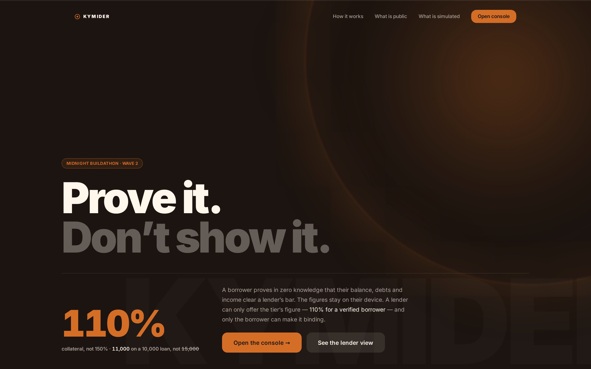
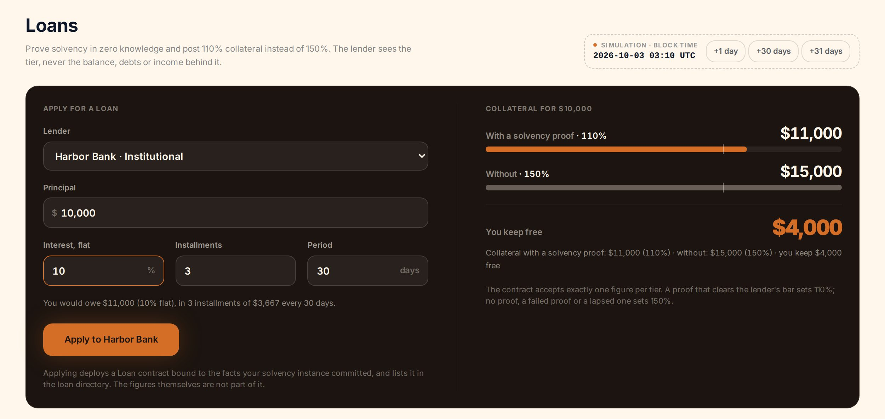
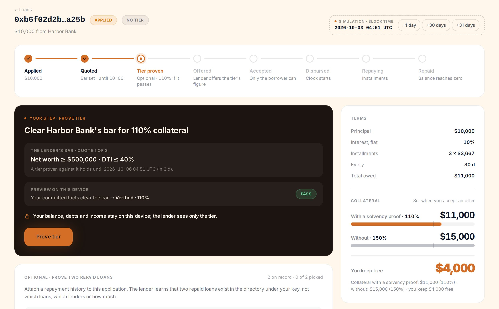
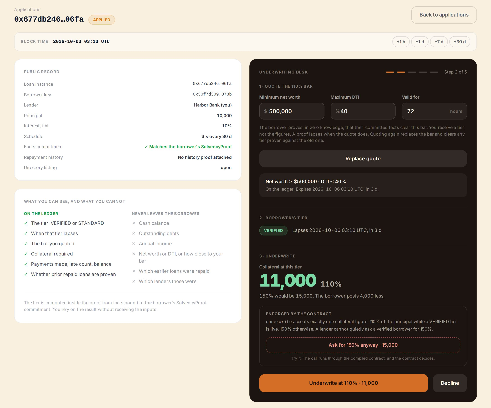
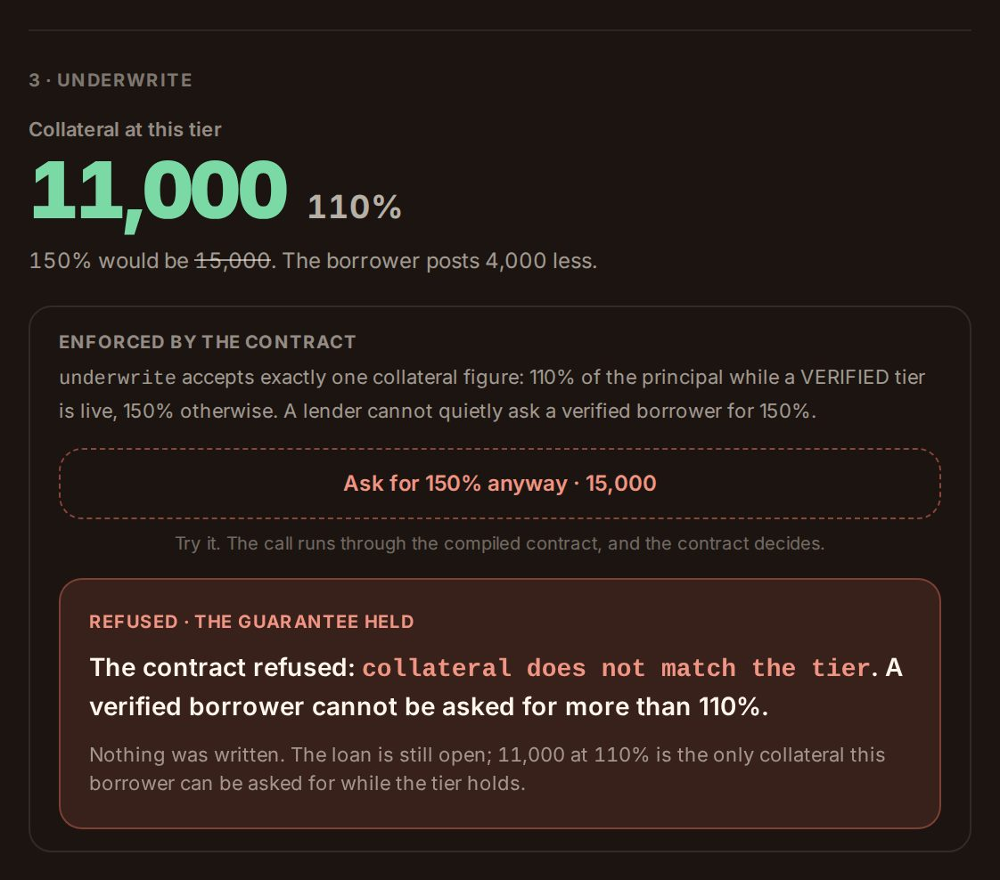
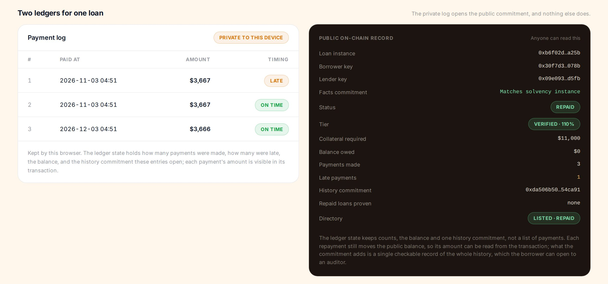
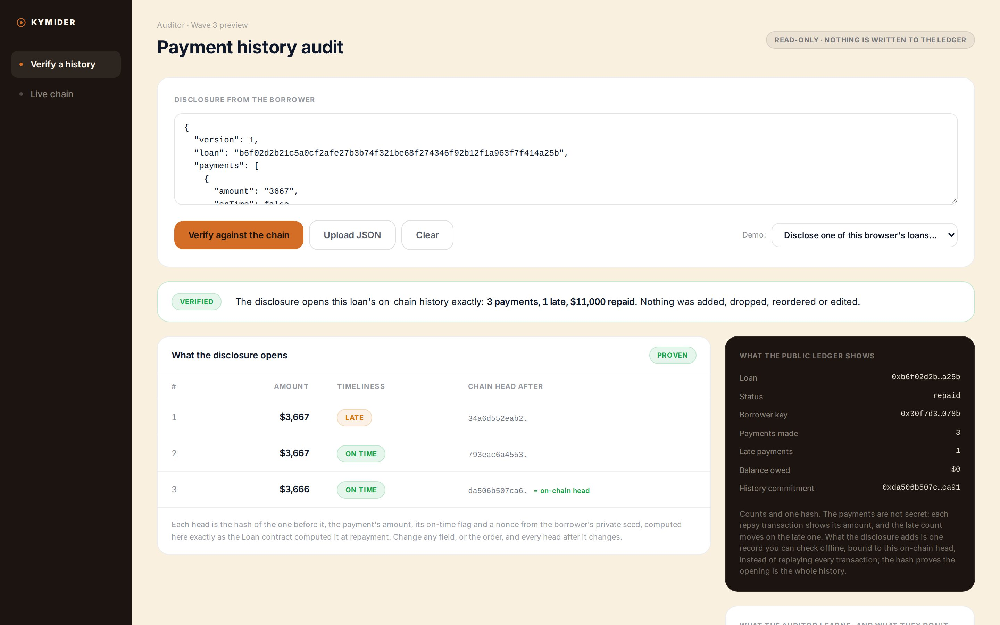
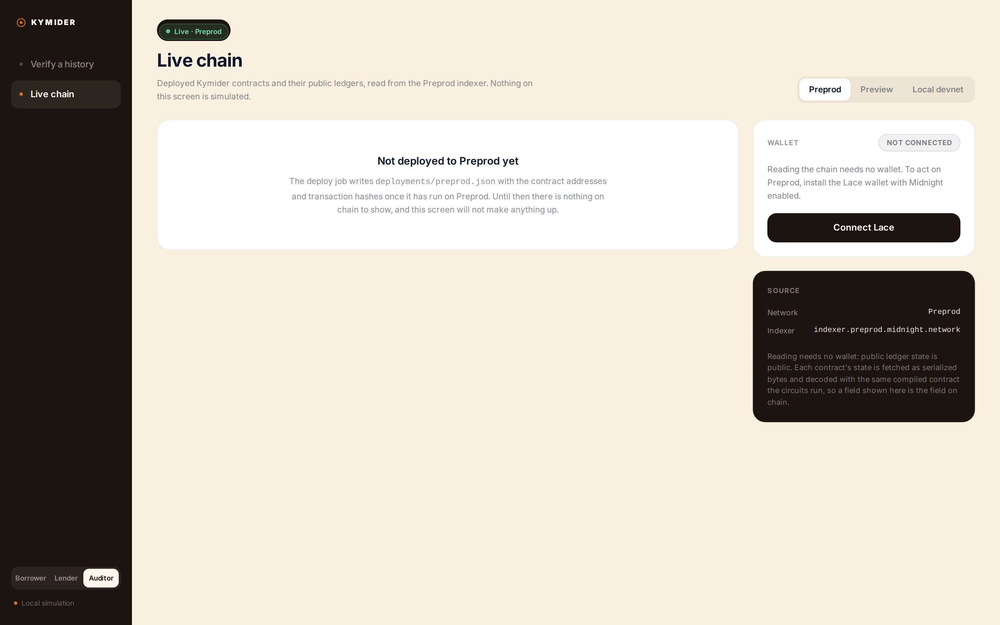

Midnight Buildathon · Wave 2 · Compact + MidnightJS
Prove solvency privately. Post 110% collateral, not 150%.
A borrower proves in zero knowledge that their committed balance, debts and income clear a lender’s bar. The Loan contract then lets the lender offer only the tier’s collateral, 110%, and only the borrower’s acceptance makes it binding. The figures never enter a transaction.
Live console
turnless.github.io/kymider
Repository
github.com/Turnless/kymider
On-chain proof
CI devnet job · Preprod pending
The problem
A lending protocol cannot ask for bank statements. It treats every borrower as unknown and asks for 150% collateral. A borrower with a clean balance sheet pays the same as one without.
Disclosing finances is the fix the setting cannot accept: it puts a financial history on a public chain or in a counterparty’s database. The lender does not want the data. It wants one answer: does this borrower clear our bar?
The borrower
Locks up capital it could put to work, because it cannot show what it has without showing everything.
The lender
Cannot offer a cheaper tier, because it has no signal it can rely on.
Disclosure
Turns a one-bit question into a permanent data liability for both sides.
The number · a 10,000 loan
Not verified · Tier STANDARD
15,000
150% of principal. What every borrower posts today.
Verified · Tier VERIFIED
11,000
110% of principal. Enforced in-circuit: the exact floor, nothing else passes.
27% less collateral for the same loan (4,000 of 15,000), or 36% more borrowing on the same collateral (1.5 / 1.1). The lender learns VERIFIED. It never learns the balance.
How it works · one Loan instance per loan
H(tag, H(balance, debts, income), salt). Figures and the 32-byte salt stay on the device.deploy Loan(lender, terms, commitment) and LoanDirectory.list. Terms are public.quoteTerms A net-worth floor, a max DTI, an expiry at least 30 min out. At most 3 per loan; none while a verified tier is live.proveTier Facts are private circuit inputs; the circuit checks them against the commitment and writes VERIFIED or STANDARD.underwrite(collateral) An offer, accepted only if collateral = floor(principal × 110% or 150%).collateral does not match the tier.accept The borrower accepts the offer, and only then is the loan ACTIVE. Or declineOffer: back to APPLIED.disburse, repay × N, markDefault after a 3-day grace. Lateness is block time.proveTwoRepaid Two private Merkle paths, checkRoot against the directory. Public result: “2 repaid loans”.
Compact has no division. The client computes each quotient; the circuit checks it by
cross-multiplying: v×10000 ≤ p×ratio < (v+1)×10000.
Midnight’s dual ledger · exactly what is private
| Datum | Ledger | Mechanism |
|---|---|---|
| Balance, debts, income | Private | Circuit inputs to proveTier; only a salted persistentHash of them is public |
| Secret key, facts salt, history seed, payment nonces | Private | Witnesses localSk, factsSalt, paymentNonce |
| Which loans back a history proof | Private | HistoricMerkleTree paths + checkRoot. A key’s repaid listings stay countable |
| Tier VERIFIED / STANDARD and its expiry | Public | disclose(): one yes/no answer per proof, at most 3 per loan |
| Quote, terms, collateral, balance owed, due date | Public | Enforced by block time and caller checks |
| Each repay amount, payments made, late payments, history chain head | Public | Amounts are transaction inputs; Counter + hash chain an auditor can check offline |
Live console · the borrower and the lender




Live console · refusal, history, auditor, chain




Engineering evidence · every number links to the repo
4
Compact contracts
22 circuits plus exported pure helpers. Language 0.23, toolchain 0.31.1, compiled in CI on every push.
302
Offline tests
Drive the compiled contracts, every refusal included. npm run test:unit
18
Devnet cases
Two wallets, real ZK proofs, node + indexer + proof server in Docker.
46
Browser tests
Playwright on the console build at 1440 and 390 px: the judge path and each refusal, in CI.
Time is tested to the second: quote expiry, a payment exactly on its due date, a default one second inside the grace period. The payment-history chain is rebuilt from the seed and compared byte for byte. Forged Merkle paths, someone else’s record and a loan vouching for itself are all refused.
Market and adoption
Who
Lending protocols that over-collateralize at 150% and up because they cannot assess a borrower. Their borrowers with balance sheets the protocol cannot see.
Adoption path
One protocol adds a verified tier. The borrower generates one proof per loan. No regulatory change, no new identity system. Then regulated lenders, through the Wave 3 auditor and attestation channel.
The dependency
Figures are self-reported today, so anyone can get VERIFIED. A data provider co-signing facts into private state makes the tier worth a lower price. That is a partnership, not more cryptography.
What changed since Wave 1
| Wave 1 | Wave 2 | |
|---|---|---|
| Contracts / circuits | 2 / 9 | 4 / 22 · + Loan, LoanDirectory |
| What a proof buys | PASS / FAIL | 110% vs 150% collateral, enforced in-circuit, binding on the borrower’s acceptance |
| Compact features | Witness, commitments, Map/Set, Counter | + block time, HistoricMerkleTree + checkRoot, salt and nonce witnesses, division-free quotient checks |
| Offline / browser tests / devnet cases | 49 / 0 / 11 | 302 / 46 / 18 |
| On-chain | Local devnet | Local devnet in CI on every push (proven transactions, re-read and checked). Preprod: pending |
| Console | Solvency screens | + loan desk, portfolio, auditor preview, Live view |
| AKINDO record | Repo unlinked, private, tagged Base | Fix pending: connect the repo, make it public, tag Midnight |
Roadmap · and what is simulated today
Auditor views
The preview exists: the auditor checks an exported payment history against the on-chain hash, offline. It proves integrity; the amounts are already public. Wave 3 adds a read-only regulator dashboard.
Attested provenance
A data provider co-signs facts at ingestion. The same allowlist stops a borrower minting repayment records by lending to themselves.
Bank channel
Signed, expirable attestations a bank verifies offline, with no Midnight node on its side.
Simulated today: no token moves (collateral and balances are figures in contract state); figures are self-reported, so VERIFIED is free today; the browser console executes circuits without generating proofs or using a wallet. Unaudited.
Kymider · Wave 2
Team
{{OWNER_NAME}}, solo builder: contracts, client, console, CI.
The ask
An introduction to one Midnight lending protocol, and one data provider willing to co-sign facts.
Try it
turnless.github.io/kymider
github.com/Turnless/kymider
Apache-2.0